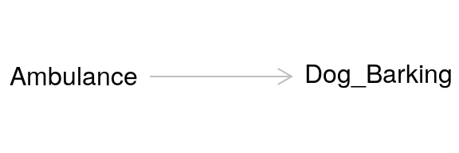
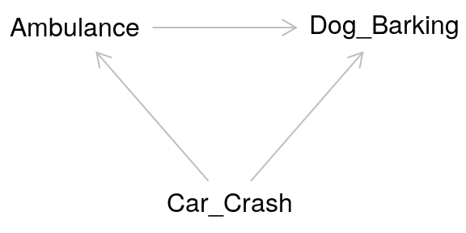
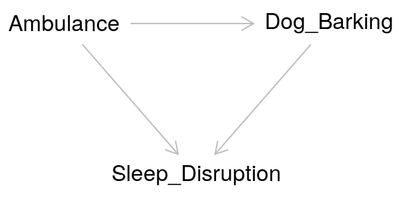
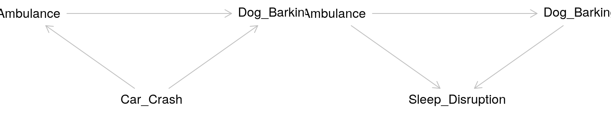
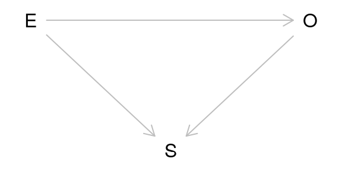
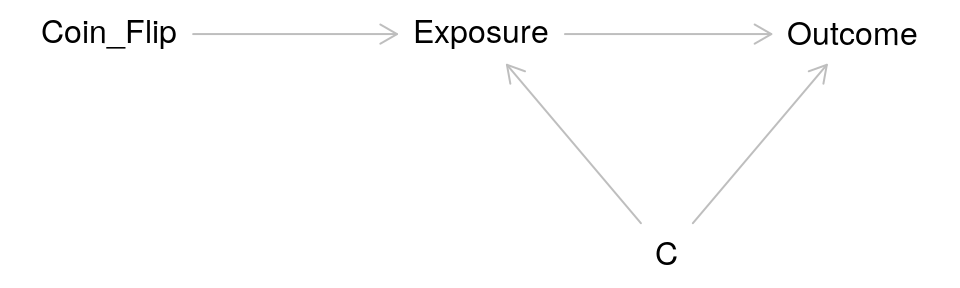
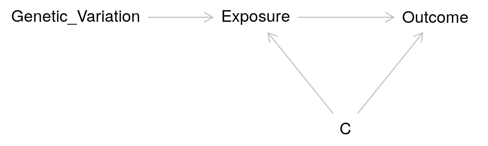
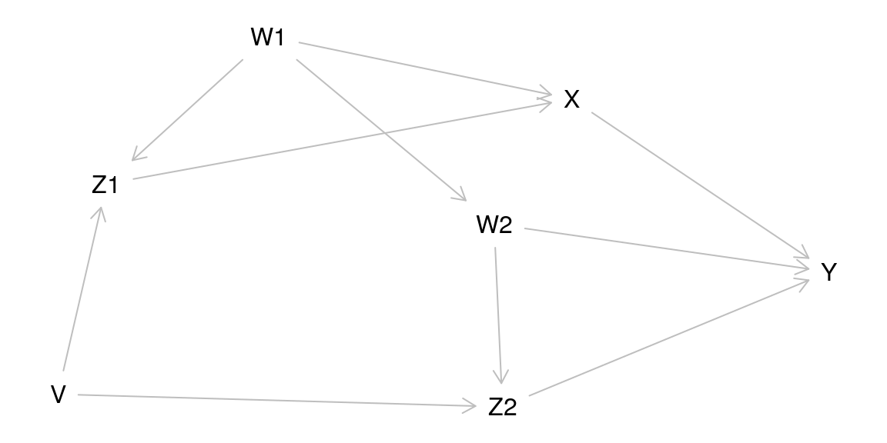
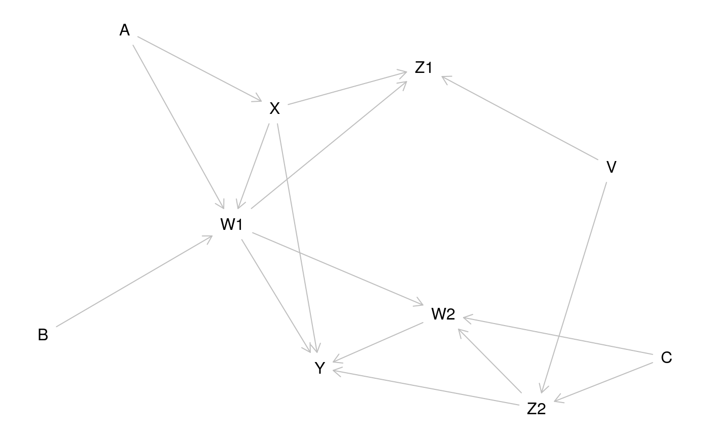

vignettes/EpiForBioWorkshop.Rmd
EpiForBioWorkshop.RmdChloe Mirzayi, cmirzayi@gmail.com
Levi Waldron, levi.waldron@sph.cuny.edu
CUNY School of Public Health, 55 W 125th St, New York, NY 111027
Dictionary definition
something that brings about an effect or a result (Merriam-Webster)
This doesn’t tell us much though in terms of identifying a cause. How do we know our potential cause brought about an effect or a result? Perhaps it preceded the effect of interest. However, it could still just be a coincidence. Perhaps there is a lurking second cause that causes both our potential cause and the observed effect.
Despite this, humans (and animals) tend to have a relatively intuitive understanding of causation when we observe it directly. When I burn my finger while cooking, I know what caused it–my finger coming into contact with a hot stove. I could also trace the causal pathway backward and identify what caused my finger to come into contact with the hot stove in the first place–such as my motivation to cook dinner or me being distracted by the antics of my cat.
Example: My cat, who I adopted in 2017, has quickly learned that jumping on my kitchen table while I’m eating results in him getting a spritz of water with a spray bottle–but only if the spray bottle is within reach. What potential causal variables could my cat be considering when he decides to jump on the table?
However, the nature of much of the work I (and probably most of you) do does not allow us to directly observe what caused an event of interest. Instead we must rely on inferences we draw from our data to establish an argument for a particular causal mechanism or pathway.
Rather than relying on vague dictionary definitions or me talking at length about my cat to inform the science of causal inference, the most commonly accepted definition of a cause in modern epidemiology is based on a counterfactual: what would have happened had the event of interest had the exposure not occurred.
But that’s not very intuitive or easy to parse so let’s consider an example:
An ambulance drives by a house with its sirens on. A dog in the house barks. We can ask the causal question in a straightforward way: Did the ambulance driving by the house cause the dog to bark?
Alternatively, we can rephrase the question in terms of a counterfactual: Would the dog have barked if the ambulance had not driven by the house? We can visualize the relationship using a causal diagram also called a directed acyclic graph (DAG).

This diagram depicts the cause or exposure (the ambulance) and the effect or the outcome (the dog barking) with an arrow indicating the direction of the causal relationship. In contrast to a diagram showing a statistical relationship, causal diagrams must state a directional relationship because we are theorizing that one variable causes another.
This is the simplest form of a causal diagram. If we were to statistically model the effect for this relationship using regression, a simple two-variable model containing the exposure and the outcome would give us a correct, unbiased estimate of the actual strength of the cause on the effect. However, we are rarely that lucky. A common source of bias is confounding.
Confounding arises when a third variable is present in the relationship between cause-and-effect. A confounder is present when:
Returning to our example, the relationship between the ambulance and the barking dog could be confounded by a third variable: a nearby car crash. Perhaps this car crash is what started the dog barking before the ambulance even arrived, but the ambulance caused the dog to bark even more.
 The pathway between the exposure and the outcome through the confounder is called a “backdoor pathway” and it can bias the relationship between the exposure and the outcome you observe. In this situation, we might observe barking and conclude that it occurred due to the ambulance when in fact it was due to the car crash. Or we might conclude that the volume of the barking caused by the ambulance alone is much greater than it actually is due to the combined effect of both the car crash and the ambulance.
We can “deconfound” the effect of interest by controlling for the confounder. The old-fashioned way of doing this is to manually stratify your data by levels of the confounder. Then you calculate an effect size for each stratum. In a modern regression model, we can include the confounder as an independent variable in our model and it is controlled for. When we include the confounder as a variable in a regression model, we are effectively stratifying the effect across different levels of the confounder then taking the weighted average across strata to get an effect size.
Taken at face value, colliders are similar to confounders. However, colliders are not common causes of the exposure and outcome. Instead:


Adjusting for a collider as one would for a confounder can create bias. In effect by adjusting for a collider, a backdoor pathway is opened between the exposure and the outcome through the collider. So what’s the proper way of dealing with colliders? Ignoring them! Hypothesized colliders should not be adjusted for or included in models.
Another major issue of causal inference is selection bias. This arises when selection is dependent on the exposure and the outcome in the study:

As can be seen from the DAG above, selection bias is a collider. In this case, the study is conditioned on the collider by the act of selection for the study. As a result, the study is biased. One particularly memorable way to think of selection bias is as the “already dead” problem. People who have already died of the outcome are not alive to be in the study. These people may have a more aggressive or serious form of the outcome and not including them masks some of the causal relationship.
A common source of selection bias is loss to follow-up in many studies. In survival analysis in particular this can be important as the people who are lost may differ in important ways from those who completed the study. Unfortunately because these people were lost, it is often difficult to assess how they differed from those who were not lost.
Question: How can selection bias occur in an RCT?
Consider the DAG for an RCT:

In IV/MR analysis the coin flip is replaced with a source of randomization such as genetic variation: 
Researchers have used a variety of factors as sources of pseudorandomness in IV studies: - Before and after implementation of a new government policy - Distance from a medical center -
R provides many packages that are helpful in causal inference.
Dagitty allows for creating causal diagrams, but also gives you more information including what variables to adjust for in complicated causal models.
g1 <- dagitty( "dag { W1 -> Z1 -> X -> Y Z1 <- V -> Z2 W2 -> Z2 -> Y X <- W1 -> W2 -> Y }") plot(graphLayout(g1))

for( n in names(g1) ){ for( m in setdiff( descendants( g1, n ), n ) ){ a <- adjustmentSets( g1, n, m ) if( length(a) > 0 ){ cat("The total effect of ",n," on ",m, " is identifiable controlling for:\n",sep="") print( a, prefix=" * " ) } } }
## The total effect of V on Z2 is identifiable controlling for:
## * {}
## The total effect of V on Y is identifiable controlling for:
## * {}
## The total effect of V on Z1 is identifiable controlling for:
## * {}
## The total effect of V on X is identifiable controlling for:
## * {}
## The total effect of W1 on Z1 is identifiable controlling for:
## * {}
## The total effect of W1 on X is identifiable controlling for:
## * {}
## The total effect of W1 on Y is identifiable controlling for:
## * {}
## The total effect of W1 on W2 is identifiable controlling for:
## * {}
## The total effect of W1 on Z2 is identifiable controlling for:
## * {}
## The total effect of W2 on Z2 is identifiable controlling for:
## * {}
## The total effect of W2 on Y is identifiable controlling for:
## * { V, X }
## * { W1 }
## The total effect of X on Y is identifiable controlling for:
## * { W2, Z2 }
## * { V, W2 }
## * { V, W1 }
## * { W1, Z1 }
## The total effect of Z1 on X is identifiable controlling for:
## * { W1 }
## The total effect of Z1 on Y is identifiable controlling for:
## * { W1, W2, Z2 }
## * { V, W1 }
## The total effect of Z2 on Y is identifiable controlling for:
## * { W2, X }
## * { W1, W2, Z1 }
## * { V, W2 }For this example, we use the VogtmannE 2016 dataset in cMD. The dataset has 52 cases of colorectal cancer and 58 controls.
First, download the data, extract the expressionset, and only take responses for which we have a value for study condition.
vogtmann <- curatedMetagenomicData("VogtmannE_2016.metaphlan_bugs_list.stool", dryrun = FALSE)
## Working on VogtmannE_2016.metaphlan_bugs_list.stool## using temporary cache /tmp/Rtmp7MmAsT/BiocFileCache## snapshotDate(): 2020-07-10## see ?curatedMetagenomicData and browseVignettes('curatedMetagenomicData') for documentation## downloading 1 resources## retrieving 1 resource## loading from cachevm.eset <-vogtmann[[1]] table(vm.eset$study_condition, useNA="ifany")
##
## control CRC <NA>
## 52 52 6##
## control CRC
## 52 52First we conduct a basic analysis to examine whether there are any statistically significant differences in taxa of microbiota by study condition. We use a forgiving alpha of 0.10 for adjusted p-values. We find 5 significant taxa in this crude analysis.
vm.pseq <- ExpressionSet2phyloseq(vm.sub)
## Warning: `data_frame()` is deprecated as of tibble 1.1.0.
## Please use `tibble()` instead.
## This warning is displayed once every 8 hours.
## Call `lifecycle::last_warnings()` to see where this warning was generated.dx_only <- phyloseq_to_deseq2(vm.pseq, ~ study_condition)
## converting counts to integer mode## Warning in DESeqDataSet(se, design = design, ignoreRank): some variables in
## design formula are characters, converting to factorsdx_only <- DESeq(dx_only, test="Wald", fitType="parametric")
## estimating size factors## estimating dispersions## gene-wise dispersion estimates## mean-dispersion relationship## final dispersion estimates## fitting model and testing## -- replacing outliers and refitting for 58 genes
## -- DESeq argument 'minReplicatesForReplace' = 7
## -- original counts are preserved in counts(dds)## estimating dispersions## fitting model and testingres = results(dx_only, cooksCutoff = FALSE) alpha = 0.10 sigtab = res[which(res$padj < alpha), ] sigtab = cbind(as(sigtab, "data.frame"), as(tax_table(vm.pseq)[rownames(sigtab), ], "matrix")) head(sigtab)
## baseMean log2FoldChange lfcSE stat
## g__Escherichia 1.160319 3.131873 0.8680873 3.607785
## s__Ruminococcus_torques 2.057123 1.221872 0.3181531 3.840515
## s__Escherichia_coli 1.021863 3.114437 0.8976217 3.469654
## t__Ruminococcus_torques_unclassified 1.317457 1.711670 0.4640449 3.688588
## t__Escherichia_coli_unclassified 1.021863 3.114437 0.8976217 3.469654
## pvalue padj Kingdom
## g__Escherichia 0.0003088219 0.05507325 Bacteria
## s__Ruminococcus_torques 0.0001227764 0.05507325 Bacteria
## s__Escherichia_coli 0.0005211292 0.05576082 Bacteria
## t__Ruminococcus_torques_unclassified 0.0002255023 0.05507325 Bacteria
## t__Escherichia_coli_unclassified 0.0005211292 0.05576082 Bacteria
## Phylum Class
## g__Escherichia Proteobacteria Gammaproteobacteria
## s__Ruminococcus_torques Firmicutes Clostridia
## s__Escherichia_coli Proteobacteria Gammaproteobacteria
## t__Ruminococcus_torques_unclassified Firmicutes Clostridia
## t__Escherichia_coli_unclassified Proteobacteria Gammaproteobacteria
## Order Family
## g__Escherichia Enterobacteriales Enterobacteriaceae
## s__Ruminococcus_torques Clostridiales Lachnospiraceae
## s__Escherichia_coli Enterobacteriales Enterobacteriaceae
## t__Ruminococcus_torques_unclassified Clostridiales Lachnospiraceae
## t__Escherichia_coli_unclassified Enterobacteriales Enterobacteriaceae
## Genus Species
## g__Escherichia Escherichia <NA>
## s__Ruminococcus_torques Blautia Ruminococcus_torques
## s__Escherichia_coli Escherichia Escherichia_coli
## t__Ruminococcus_torques_unclassified Blautia Ruminococcus_torques
## t__Escherichia_coli_unclassified Escherichia Escherichia_coli
## Strain
## g__Escherichia <NA>
## s__Ruminococcus_torques <NA>
## s__Escherichia_coli <NA>
## t__Ruminococcus_torques_unclassified Ruminococcus_torques_unclassified
## t__Escherichia_coli_unclassified Escherichia_coli_unclassifiedNext we adjust (deconfound) for categorized age. We find two significant results:
dx_age <- phyloseq_to_deseq2(vm.pseq, ~ study_condition + age_category)
## converting counts to integer mode## Warning in DESeqDataSet(se, design = design, ignoreRank): some variables in
## design formula are characters, converting to factorsdx_age <- DESeq(dx_age, test="Wald", fitType="parametric")
## estimating size factors## estimating dispersions## gene-wise dispersion estimates## mean-dispersion relationship## final dispersion estimates## fitting model and testing## -- replacing outliers and refitting for 60 genes
## -- DESeq argument 'minReplicatesForReplace' = 7
## -- original counts are preserved in counts(dds)## estimating dispersions## fitting model and testingres = results(dx_age, cooksCutoff = FALSE, contrast=c("study_condition", "CRC", "control")) alpha = 0.10 sigtab = res[which(res$padj < alpha), ] sigtab = cbind(as(sigtab, "data.frame"), as(tax_table(vm.pseq)[rownames(sigtab), ], "matrix")) head(sigtab)
## baseMean log2FoldChange lfcSE stat
## s__Ruminococcus_torques 2.057123 1.225518 0.3199339 3.830534
## t__Ruminococcus_torques_unclassified 1.317457 1.706224 0.4661006 3.660634
## pvalue padj Kingdom
## s__Ruminococcus_torques 0.0001278654 0.06730097 Bacteria
## t__Ruminococcus_torques_unclassified 0.0002515924 0.06730097 Bacteria
## Phylum Class Order
## s__Ruminococcus_torques Firmicutes Clostridia Clostridiales
## t__Ruminococcus_torques_unclassified Firmicutes Clostridia Clostridiales
## Family Genus
## s__Ruminococcus_torques Lachnospiraceae Blautia
## t__Ruminococcus_torques_unclassified Lachnospiraceae Blautia
## Species
## s__Ruminococcus_torques Ruminococcus_torques
## t__Ruminococcus_torques_unclassified Ruminococcus_torques
## Strain
## s__Ruminococcus_torques <NA>
## t__Ruminococcus_torques_unclassified Ruminococcus_torques_unclassifieddx_age_gender <- phyloseq_to_deseq2(vm.pseq, ~ study_condition + age_category + gender)
## converting counts to integer mode## Warning in DESeqDataSet(se, design = design, ignoreRank): some variables in
## design formula are characters, converting to factorsdx_age_gender <- DESeq(dx_age_gender, test="Wald", fitType="parametric")
## estimating size factors## estimating dispersions## gene-wise dispersion estimates## mean-dispersion relationship## final dispersion estimates## fitting model and testing## -- replacing outliers and refitting for 45 genes
## -- DESeq argument 'minReplicatesForReplace' = 7
## -- original counts are preserved in counts(dds)## estimating dispersions## fitting model and testingres = results(dx_age_gender, cooksCutoff = FALSE, contrast=c("study_condition", "CRC", "control")) alpha = 0.10 sigtab = res[which(res$padj < alpha), ] sigtab = cbind(as(sigtab, "data.frame"), as(tax_table(vm.pseq)[rownames(sigtab), ], "matrix")) head(sigtab)
## baseMean log2FoldChange lfcSE stat
## s__Ruminococcus_torques 2.057123 1.22658 0.3202308 3.830298
## t__Ruminococcus_torques_unclassified 1.317457 1.73073 0.4655552 3.717562
## pvalue padj Kingdom
## s__Ruminococcus_torques 0.0001279881 0.05380886 Bacteria
## t__Ruminococcus_torques_unclassified 0.0002011546 0.05380886 Bacteria
## Phylum Class Order
## s__Ruminococcus_torques Firmicutes Clostridia Clostridiales
## t__Ruminococcus_torques_unclassified Firmicutes Clostridia Clostridiales
## Family Genus
## s__Ruminococcus_torques Lachnospiraceae Blautia
## t__Ruminococcus_torques_unclassified Lachnospiraceae Blautia
## Species
## s__Ruminococcus_torques Ruminococcus_torques
## t__Ruminococcus_torques_unclassified Ruminococcus_torques
## Strain
## s__Ruminococcus_torques <NA>
## t__Ruminococcus_torques_unclassified Ruminococcus_torques_unclassifiedAs mentioned in the confounding section, estimates obtained for the relationship between the exposure and the outcome have been adjusted for the included confounders (deconfounded). This means that the observed estimate is an averaged effect size across strata of the confounder(s).

Unfortunately there’s no silver bullet for confounding or bias in R or Bioconductor. Instead, we as researchers must carefully consider possible sources of bias–ideally as we begin designing the study. DAGs are helpful in providing a clear visualization of the hypothesized causal mechanism and identifying potential confounders.
Unmeasured confounding presents a particularly difficult problem for causal inference. Because the confounder was not measured, we cannot easily deconfound for it.
It is important for us to remember that the definition of a cause is rooted in the counterfactual: we need to find a way to come as close as possible to observing what would have happened if a participant’s exposure status had been different.